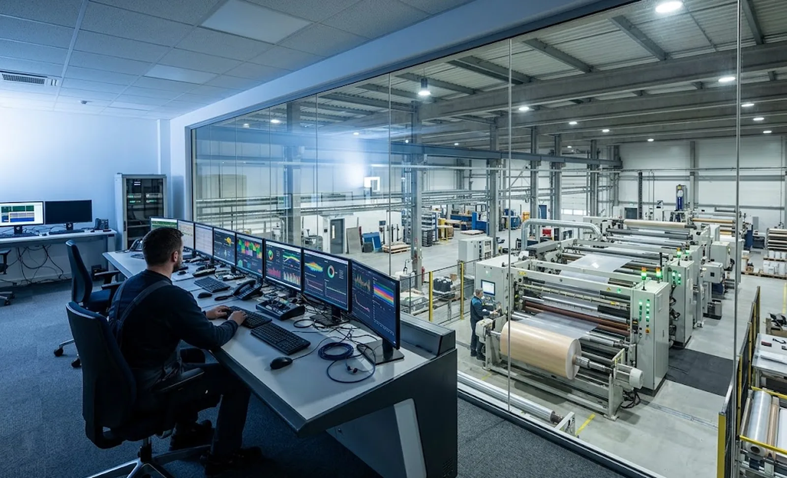
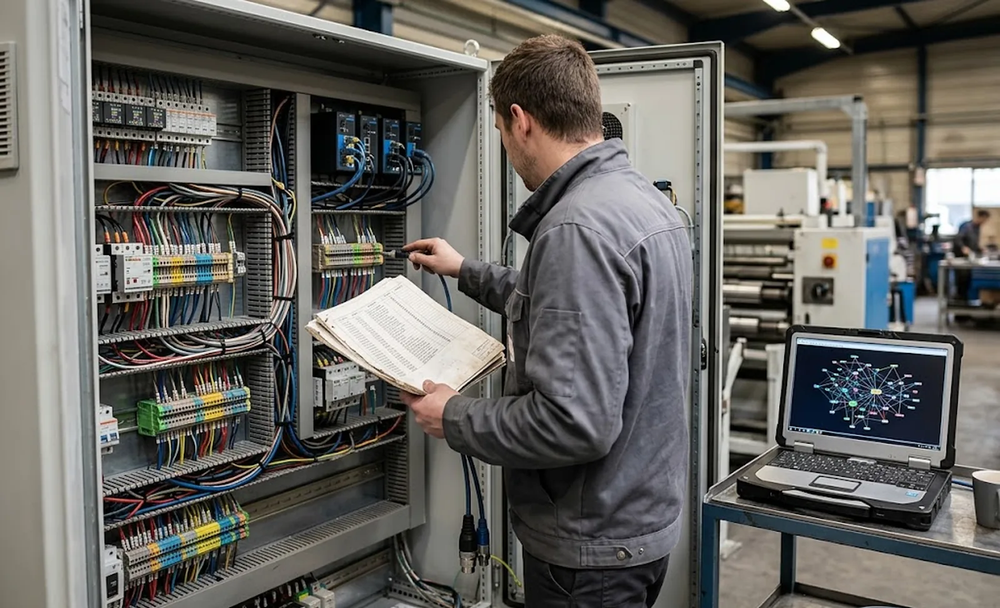

Published September 30, 2026 | By HDPTH Technical Editorial Team

Buying a slitter rewinder for a plant that runs an MES is a different purchase from buying one for a standalone converting hall. The mechanics may be identical, but a second machine — the data machine — must work too, and it is decided at order time. Plants that treat MES connectivity as a later project routinely discover the rewinder’s control system cannot expose its production records without a paid upgrade, or that the builder’s “data access” means a proprietary viewer no MES can read.
What the data exchange actually consists of
Strip away the jargon and an MES interface is two flows plus a discipline:
- Downward — jobs and recipes: work order identity, material code, slit plan, target length, and which validated machine recipe to run. The MES says what to produce; the machine knows how.
- Upward — records and status: start and stop timestamps, metres produced, good versus waste split, roll-by-roll identity with length and quality flags, event and alarm codes, and state (running, idle, fault) for utilisation reporting.
- The discipline: all of the above as a written tag list — variable names, data types, update rates and direction — agreed before order confirmation. “The machine can provide full data access” is not a specification; it is the absence of one.
Two machine capabilities make the upward flow trustworthy. First, the control system must timestamp and store records locally and forward them after a network outage — a connected machine that stops producing when the network blinks is a design error. Second, roll identity must be unambiguous: either the machine receives a roll number from the MES or generates one, and every record — including quality flags from web inspection — keys on it.
Choosing the interface: fieldbus, OPC UA, or both
Match the interface to what the data is for:
| Interface | Best suited for | Buyer checklist |
|---|---|---|
| Fieldbus (Profinet, EtherNet/IP, Modbus TCP) | Speed references, counts, alarms to your automation layer | Documented tag database; standard protocol; no gateway licence |
| OPC UA | Structured production records, events, secure cross-network transport | Server or client mode per your architecture; companion spec where available; certificates supported |
| File or database export | Batch records, historical analysis, simple MES systems | Defined schema and timing; testable without builder software |
The non-negotiable principle is openness in both directions: any interface that requires the builder’s proprietary software to read the machine’s own production data will cost you for as long as you own the machine. Ask specifically whether the offered OPC UA information model is documented, and whether tag lists are exportable in a standard format your integrator can consume without the builder present. This pairs naturally with the remote-access requirements in our remote diagnostics guide: both live on the same network architecture, and both should be security-reviewed together.

Recipes: two layers, one rule
The most common design mistake in converting MES projects is letting the MES write raw setpoints — tensions, speeds, knife positions — directly into the machine. It creates a system where production parameters bypass validation, where the machine cannot run when the MES is down, and where nobody can say which parameter version produced a given roll. The robust architecture keeps two layers: the machine’s own recipe management holds validated parameter sets that operators trust, and the MES layer selects which recipe runs for which job and collects the results. The rule is simple: the MES chooses and records; the machine validates and executes. This keeps the utilisation and downtime data clean too.
Who does what — and how you will know it works
Three parties can share MES integration work: the machine builder, your system integrator, and your IT team. Any split works if it is written down. The builder owns everything inside the machine boundary: the data exposed, its semantics, update behaviour, buffering, and the interface specification document. Your side owns MES configuration, mapping and dashboards. Two contractual items decide whether the project flows or stalls: the tag list and interface specification delivered as contract documents, and a live demonstration of the working link at FAT — against written acceptance criteria, including the failure cases. Pull the network cable mid-run: the machine must keep producing and buffer every record.
Specifying a data-connected rewinder?
Send HDPTH your MES platform and the data you need per roll. We quote the machine with a written interface specification — tag list, protocol, buffering behaviour — and demonstrate the live link at FAT before shipment.
Submit Your Project InquiryQuestions to put to every vendor
- Can we see a sample tag list from a comparable machine, with names, types and update rates?
- Is the OPC UA information model documented, or is data access tied to your proprietary software?
- Does the control system buffer production records locally and forward them after a network outage?
- Will you run the live interface test at FAT, including the network-failure case, against written criteria?
Building a connected converting plant?
Our guides on data logging and ERP integration and IQ/OQ validation documentation cover the adjacent decisions — or send your data architecture for review.
Contact HDPTHFrequently asked questions
What data should a slitter rewinder exchange with an MES?
Downward, the MES sends work orders and recipes: job identity, material, slit plan, target length, tension setpoints and knife positions. Upward, the machine returns production records — start and stop times, metres produced, good and waste split, roll-by-roll identity and length — plus events and alarms, fault codes and the quality flags from web inspection. The discipline that matters is a written tag list with names, types, update rates and direction, agreed before order confirmation, not a vague promise of ‘full data access’.
Is OPC UA necessary, or is a fieldbus connection enough?
A fieldbus connection (Profinet, EtherNet/IP and similar) moves signals between the machine PLC and your automation layer and is entirely adequate for speed references, counts and alarms. OPC UA adds a structured, self-describing data model with secure, firewall-friendly transport, which is why modern MES projects prefer it for production records and events. The practical answer for most buyers: require the machine to expose data in a standard, documented form — OPC UA or a documented tag database over the existing fieldbus — and refuse proprietary black-box interfaces that need the builder’s software to read.
Who writes the integration — the machine builder, our integrator or our IT team?
Any of the three can work if the split is written down. The machine builder should own everything inside the machine boundary: the data exposed, its semantics, update behaviour and buffer-and-forward after network loss. Your side — MES configuration, mapping, historians and dashboards — is usually your integrator or IT team. The one clause that matters: the builder must deliver the tag list and a testable interface specification as a contract document, and both parties must demonstrate the working link at FAT. ‘Integration support billed hourly’ with no specification is how MES projects stall for months.
How do MES recipes relate to the machine’s own recipe management?
They are two layers. The machine’s local recipe management holds validated parameter sets — tensions, speeds, knife positions — that the operator trusts and that keep running even if the network is down. The MES layer selects which recipe to run and when, and collects the results. Never design a system where the MES writes raw setpoints directly into the drive: route jobs through the machine’s validated recipe layer instead, so every production parameter has passed commissioning and the machine remains operable standalone.
What should we test at FAT to prove the MES interface works?
Run the real protocol against a simulated or live MES: send a job, run production, and verify the records arrive complete — every roll identified, lengths correct against a meter comparison, alarms and quality flags mapped. Deliberately test the failure cases too: pull the network cable mid-run and confirm the machine keeps producing and buffers data; send a malformed job and confirm it is rejected safely. Acceptance criteria should be written into the FAT protocol — a demonstration without written criteria proves nothing six months later.
Sources
- OPC Foundation: OPC UA specification — structured, secure industrial data interoperability
- IEC 62443 series: industrial network and system security — segmentation for MES-to-machine links
- IEC 60204-1: Electrical equipment of machines — control-system requirements relevant to data interfaces
- ISO 22400 series: manufacturing operations management — KPI definitions for OEE reporting from machine data